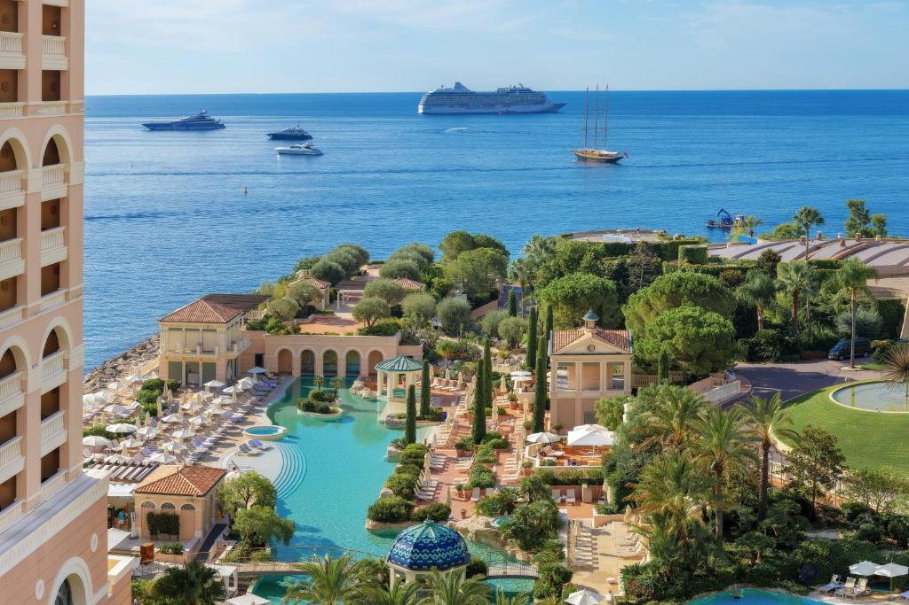
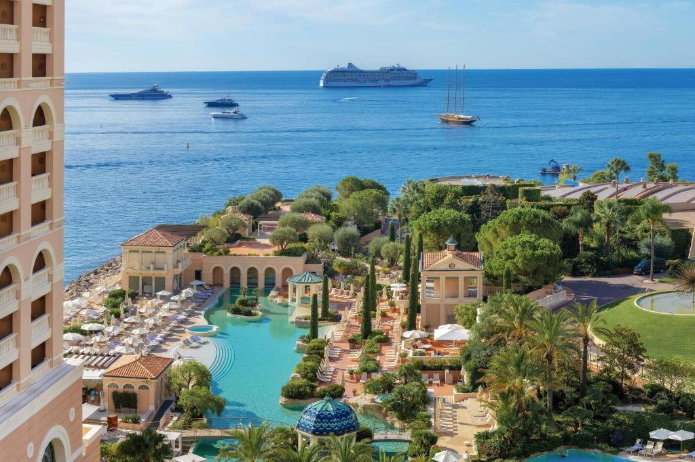

Campanhas Publicitárias
-Giovanella oferece as seguintes atividades/serviços (sujeitos a cobranças):
- Piscina coberta
- Spa / Centro de bem-estar
- Academia
- Banheira / jacuzzi
- Sauna
- Serviços de massagem
- Banho turco / Sauna a vapor
- Bilhar
- Salão de jogos
- Quadra de tênis
- Cassino
- Campo de golfe (num raio de 3 km)
- Espaço kids
- Piscina coberta (o ano inteiro)
- Instalações para esportes aquáticos no local
- Casa noturna / DJ
-A praia mais próxima fica a apenas 350 m de Giovanella, especialmente para os hóspedes e seus convidados, ha eventos e atividades para interação com ótimas oportunidades para relaxar.
 

-Giovanella tem 3 restaurantes:
- Las Brisas
- L’Orange Verte
- Blue Bay